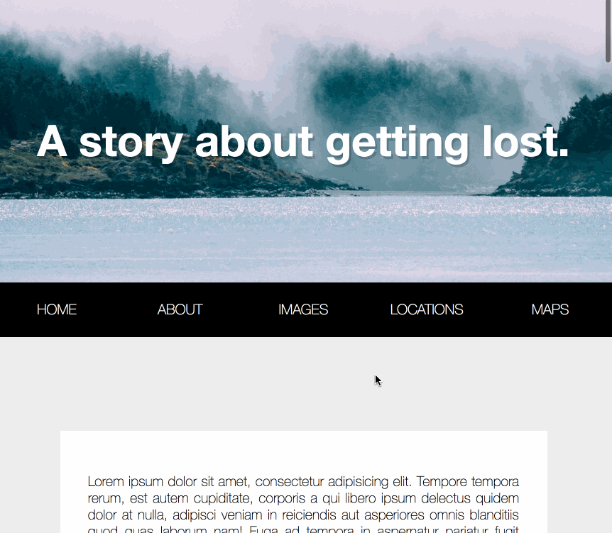

在Github上看到了wesbos的一个Javascript30天挑战的repo，旨在使用纯Js来进行练习，不允许使用任何其他的库和框架，该挑战共30天，我会在这里记录下自己练习的过程和遇到的问题。

第24天的训练是做一个下滑到导航栏，使之固定的样式。这个样式在日常生活中是很常见的效果，为了当用户在内容不断下滑后能够较快速的跳转到自己所需的其他内容，网站一般会加上这个效果，方便用户更快的进行页面导航。
源代码
let nav = document.querySelector('nav#main'); |
总体来说，思路比较简单：
- 获取导航栏到document顶部的距离；
- 监听页面的滚动事件；
- 当页面滚动距离大于或等于导航栏顶部距离时，为
body添加新的类名fixed-nav。 - 因为在
.fixed-nav下的nav是固定fixed布局，因此会脱离文档流，底下的内容会自动向上去，因此此时在滚动到导航栏是页面会有上下的跳动。解决方法如下：在滚动到nav时，为页面body添加padding-top的值为导航栏的高度(nav.offsetHeight)。
CSS
- 添加上
.fixed-nav的类的相关样式：.fixed-nav .site-wrap{
transform: scale(1);
}
.fixed-nav nav{
position: fixed;
box-shadow: 0 10px 10px rgba(0,0,0,0.2);
}
.fixed-nav li.logo{
max-width: 500px;
}
在样式里面，有一个比较核心的和动画相关的属性:transition:all 0.2s;。该条属性能够控制页面的样式从一个状态到另一个状态的过渡时间，其间的过渡动画会自动创建。
.fixed-nav .site-wrap：页面的主体内容在下滑到导航栏时会有一个细微的放大效果，从0.98-1。.fixed-nav nav：当滑动到导航栏位置时，设置导航栏相对窗口固定布局，且有一个阴影，营造出3D的效果。.fixed-nav li.logo：当滑动到导航栏的位置时，设置导航列表最左侧的logo图标显示出来。这里这所以要设置max-width属性，是因为列表采用了flex布局，且flex:1;，代表让所有弹性盒模型对象的子元素都有相同的长度，并且忽略它们内部的内容，因此这里所有的li元素都会有相同的宽度。假设我们设置它的width属性，不管宽度为多少，都不会有作用，都会显示相同的宽度。因此，设置max-width对其进行宽度上的限制。
END! 💯